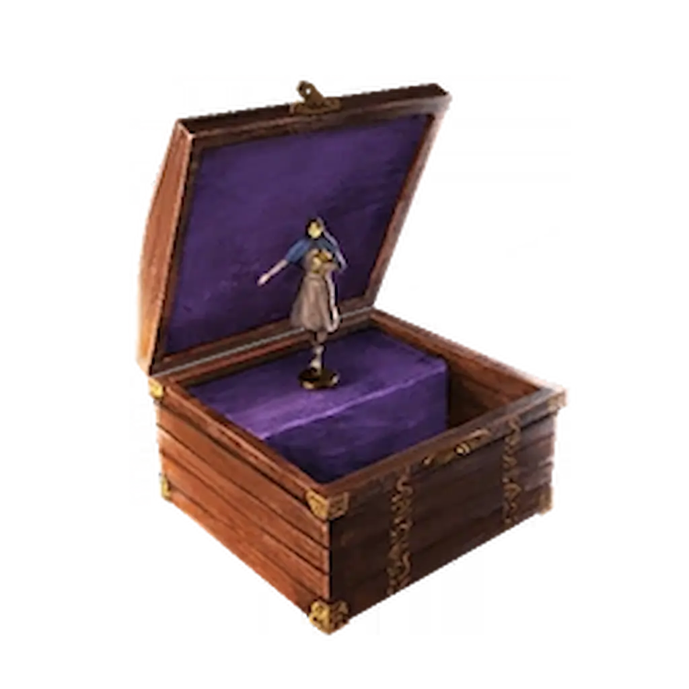

Musisz mieć ukończone główne zadanie Totenreich. Mecz musisz odpalić na poziomie Tier 2. Wyzwanie aktywuje się na rundzie 60+.

Niezbędny będzie Sniper Rifle (Karabin snajperski). Polecam Shadow SK z dobrym celownikiem optycznym, który możecie kupić ze ściany.
Gdy wybije 60. runda, musisz wejść do Głowy mechanicznego olbrzyma.
PRO TIP: Użyj Insta-kill (Błyskawiczne zabójstwo), aby ułatwić sobie sprawę. Możesz odpalić GobbleGum przed wejściem do środka (W środku jest to nie możliwe) lub rzucić C4 w bonus leżący na ziemi tuż przed teleportacją. Guma Chwilowy Prezent wydłuży działanie bonusu do minuty
Jeśli wykonasz strzały poprawnie, usłyszysz charakterystyczny śmiech Mr. Peaks. To znak, że czas ruszać dalej. Udaj się do lokacji Dry Dock (Suchy dok), gdzie znajdziesz otwarty Czerwony portal. Wejdź w interakcję, aby przenieść się do Dark Aether (Mroczny Eter)
Na mapie pojawi się fioletowa poświata, a Twoim zadaniem jest przetrwanie w 6 kolejnych lokalizacjach. Masz tylko 20 sekund na dotarcie do każdego kolejnego punktu – jeśli spóźnisz się lub wyjdziesz poza strefę (oznaczoną fioletowym kręgiem ognia), zaczniesz otrzymywać bardzo duże obrażenia.
Kolejność punktów obrony (zawsze taka sama):
Co daje ten Relikt?